Aircraft Pitch: System Analysis
Key MATLAB commands used in this tutorial are: tf , step , pole , zero , feedback , residue
Contents
From the main problem, the dynamic equations in the Laplace domain and the open-loop transfer function of the aircraft pitch dynamics are:
(1)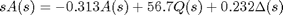
(2)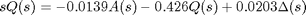
(3)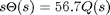
(4)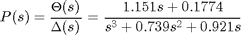
For the original problem setup and the derivation of the above equations please refer to the Aircraft Pitch: System Modeling page
For a step reference, the design criteria are the following.
- Overshoot less than 10%
- Rise time less than 2 seconds
- Settling time less than 10 seconds
- Steady-state error less than 2%
Open-loop response
First create a new m-file and type in the following commands (refer to the main problem for the details of getting these commands).
s = tf('s');
P_pitch = (1.151*s+0.1774)/(s^3+0.739*s^2+0.921*s);
Now let's see how the uncompensated open-loop system performs. Specifically, we will use the MATLAB command step to analyze the open-loop step response where we have scaled the input to represent an elevator angle input (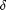) of 0.2 radians (11 degrees). Add the following commands onto the end of the m-file and run it in the MATLAB command window and you will get the associated plot shown below.
t = [0:0.01:10]; step(0.2*P_pitch,t); axis([0 10 0 0.8]); ylabel('pitch angle (rad)'); title('Open-loop Step Response');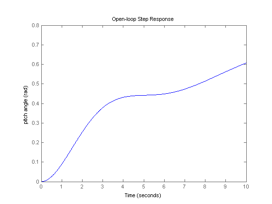
From the above plot, we see that the open-loop response does not satisfy the design criteria at all. In fact, the open-loop response is unstable. Stability of a system can be determined by examining the poles of the transfer function where the poles can be identified using the MATLAB command pole as shown below.
pole(P_pitch)
ans =
0
-0.3695 + 0.8857i
-0.3695 - 0.8857i
As indicated by this function, one of the poles of the open-loop transfer function is on the imaginary axis while the other two poles are in the left-half of the complex s-plane. A pole on the imaginary axis indicates that the free response of the system will not grow unbounded, but also will not decay to zero. Even though the free response will not grow unbounded, a system with a pole on the imaginary axis can grow unbounded when given an input, even when the input is bounded. This fact is in agreement with what we have already seen. In this particular case, the pole at the origin behaves like an integrator. Therefore, when the system is given a step input its output continues to grow to infinity in the same manner that an integral of a constant would grow to infinity as the upper limit of the integral is made larger.
Closed-loop response
In order to stabilize this system and eventually meet our given design requirements, we will add a feedback controller. The figure below illustrates the control architecture we will employ.

The closed-loop transfer function for the above with the controller C(s) simply set equal to one can be generated using the MATLAB command feedback as shown below.
sys_cl = feedback(P_pitch,1)
sys_cl =
1.151 s + 0.1774
----------------------------------
s^3 + 0.739 s^2 + 2.072 s + 0.1774
Continuous-time transfer function.
The corresponding step response can be generated by adding the above and following commands to your m-file. Note that the response is scaled to model the fact that the pitch angle reference is a 0.2 radian (11 degree) step. Running your m-file at the command line will produce the plot shown below where the annotations for the rise time, settling time and final value can be added to the plot from the right-click menu under Characteristics.
step(0.2*sys_cl);
ylabel('pitch angle (rad)');
title('Closed-loop Step Response');

Examining the above closed-loop step response, the addition of feedback has stabilized the system. In fact, the steady-state error appears to be driven to zero and there is no overshoot in the response, though the rise-time and settle-time requirements are not met. The character of the resulting step response is indicated by the location of the poles and zeros of the system's transfer function, in a similar manner to the way the system's stability properties were. The MATLAB commands pole and zero can be used to reveal the poles and zeros of the closed-loop transfer function as shown below.
poles = pole(sys_cl) zeros = zero(sys_cl)
poles = -0.3255 + 1.3816i -0.3255 - 1.3816i -0.0881 zeros = -0.1541
The above results demonstrate that the closed-loop transfer function is third order with a zero. Most of the relationships that we are familiar with for predicting the character of a system's step response assume a standard underdamped second-order system with no zeros. Therefore, we cannot rely on these relationships for this system. We can, however, transform the output back to the time domain to generate a time function for the system's response to get some insight into how the poles and zeros of the closed-loop transfer function affect the system's response. Assuming the closed-loop transfer function has the form Y(s) / R(s), the output Y(s) in the Laplace domain is calculated as follows where R(s) is a step of magnitude 0.2.
(5)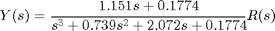
(6)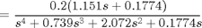
We can then perform a partial fraction expansion in order to break this expression into simpler terms that we hopefully recognize and are able to covert from the Laplace domain back to the time domain. First we will use the MATLAB command zpk to factor the numerator and denominator of our output Y(s) into simpler terms.
R = 0.2/s; Y = zpk(sys_cl*R)
Y =
0.2302 (s+0.1541)
-------------------------------------
s (s+0.08805) (s^2 + 0.6509s + 2.015)
Continuous-time zero/pole/gain model.
Based on the above, the denominator of our output Y(s) can be factored into a first-order term for the real pole of the transfer function, a second-order term for the complex conjugate poles of the transfer function, and a pole at the origin for the step input. Therefore, it is desired to expand Y(s) as shown below.
(7)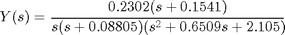
(8)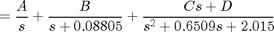
The specific values of the constants A, B, C, and D can be determined by hand calculation or by using the MATLAB command residue to perform the partial fraction expansion as shown below. Here the syntax is [r,p,k] = residue(num,den) where num and den are arrays containing the coefficients of the numerator and denominator, respectively, of the Laplace function being expanded. Notice that the denominator array includes a placeholder zero since there is no constant term in the denominator of Y(s).
[r,p,k] = residue(0.2*[1.151 0.1774],[1 0.739 2.072 0.1774 0])
r =
-0.0560 + 0.0160i
-0.0560 - 0.0160i
-0.0879
0.2000
p =
-0.3255 + 1.3816i
-0.3255 - 1.3816i
-0.0881
0
k =
[]
In the above, r is an array containing the residues of the partial fraction expansion, that is, the numerator coefficients in the expansion. The array p contains the poles of the system where the order corresponds to the order of the residues in r. The direct term k is empty in this case, as it will be in general since the numerator polyonomial will generally be a smaller order than the denominator polynomial. Based on the above, the coefficients A and B in our expansion are equal to 0.2 and -0.0881, respectively. The coeffients C and D can be determined by combining the terms for the complex conjugate poles back into a single expression as shown below.
[num,den] = residue(r(1:2),p(1:2),k); tf(num,den)
ans = -0.1121 s - 0.08071 ---------------------- s^2 + 0.6509 s + 2.015 Continuous-time transfer function.
Based on the above, C = -0.1121 and D = -0.08071 and our resulting partial fraction expansion can be expressed as follows.
(9)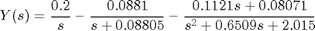
Employing a Laplace transform table, the inverse Laplace transform of the above expression can be taken to generate the corresponding time domain expression shown below. If you have the Symbolic Math toolbox addition to MATLAB, you can use the command laplace to perform the inversion.

Examining the above, each term corresponds to a pole of Y(s) where the real part of the pole describes the exponential decay (or growth) of that mode and the imaginary part of the pole corresponds to the frequency of oscillation of the mode. The effect of zeros is to alter the coefficients multiplying each of the terms. In other words, zeros affect the relative contribution of each of the modes. The above example helps to give some insight into how poles and zeros in the Laplace domain indicate the system's corresponding behavior in the time domain.
Entering the following code in the MATLAB command window will generate the plot shown below which matches (within roundoff) the plot generated using the step command above.
t = [0:0.1:70]; y = 0.2 - 0.0881*exp(-0.08805*t) - exp(-0.3255*t).*(0.1121*cos(1.3816*t)+0.0320*sin(1.3816*t)); plot(t,y) xlabel('time (sec)'); ylabel('pitch angle (rad)'); title('Closed-loop Step Response');

The above plot again demonstrates that this closed-loop system does not meet the given design requirements. The subsequent pages of this example describe several controller design techniques that produce closed-loop systems that do generate the desired system behavior.